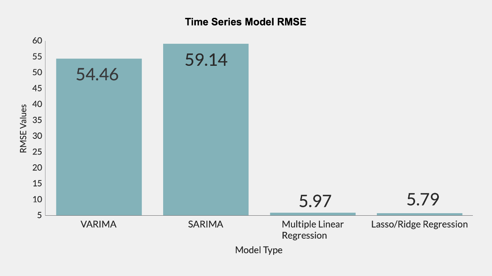

CPI Time Series Prediction Modeling
Growing up in America, I always wondered why the cost of items would continually grow and decline in price. Sometimes, fruits would be selling for under a dollar a pound, other times they were seen to be sold at up to $5 per pound. This drastic change in prices left me to dive deeper and analyze factors that caused this to occur. Initially, I thought this purely based on seasonality of items so I wanted to continue to dive into any patterns. Through a deeper analysis, I discovered that it was due to chain reactions from any field that may be connected to the resources to craft a respective product. For example, an ongoing computer chip shortage has caused a dramatic increase in valuation for cars since there was a depleting resource supply to create these vehicles. When all items get increasingly more expensive, this leaves the stock market to also follow trends and increase in value as well since more people put money into the market as they purchase items. The goal of this project is to determine any specific trends among CPI behavior to create a prediction model that would pose as a reliable source to further forecast future CPI behavior. This project may seem irrelevant to many individuals, but rather it is connected for all people since CPI data can be a reflection of the economy of the country. By understanding its behavior and being able to predict it accurately is a useful tool that all people can use to determine whether they should continue investments among the market in the short term scope.
Problem statement
For many consumers, they do not know that with changes in the consumer price index there may be a ripple effect of changes onto other aspects of economic indicators This can be in the form of interest rates, loan rates, and conversion rates for different currencies which is often used in our everyday lives. In this project, we aimed to solve the problem "How can we accurately predict the behavior of CPI [consumer price index] data from past data and other extraneous PPI [Producer Price Index] data?"
My contribution
Among this project, I spearheaded the work as Project lead for this project. All members equally contributed, however, what makes project lead stand out is that I was in charge of crafting the timeline and steps needed for this particular project. Amongst all the work, ideas and implementation was done collectively with the team as a whole, but there were many occasions where I had to take a lead on learning new technologies and packages that we used. For our work, we researched the background behind each machine learning algorithm and team decided what to do as a group collective.
Data Findings
During data exploration, we noticed that all categories had a seasonal trend that would cause
dips
and increases based on a certain time period among a calendar year.
Most importantly, there were specific periods in our dataset where major dips were present,
caused from stops in the economy from extraneous factors. There were also other times where
times
throughout major holidays such as Thanksgiving and Christmas where spikes were seen from holiday
shopping.
In this project, our team used a variety of different time series modeling techniques including
VARIMA, SARIMA, Multiple Linear Regression, Ridge Regression.
Throughout the course of choosing our final model, we initially started with just simple linear regression.
Linear regression is an easy and intuitive way of just adding weights to our respective features to determine
a linear function to be used for our prediction. This proved to be a model that was overfit among our data.
To combat the overfitting, we also looked into Lass/Ridge Regression since we could incorporate a new feature
that would penalize features that were less important or had weights that shifted the outputs at a greater extent.
However, looking into linear regression and Lasso/Ridge Regression, these models generated predictions based off
of correlating features. In other words, they produced predictions as a result of relationships with other
existing features. This led us to explore other specific time series modeling techniques. The ARIMA, also known as
Auto Regressive Integrated Moving Average, model seemed to be one that also fit into what our goal of the project was.
The benefit of using models geared towards time series data is that rather than predicting results based off other current
features, these models would instead use prior data in order to forecase new data points. On top of this,
criteria such as seasonality, residual information, or even overall trends could be shown easily with this model.
At this point, the ARIMA model seemed like one that we could use in our final predictions, but we ran into a problem
where we had a variety of features to use, but the ARIMA model just takes in a select few, leaving other features to be
forgotten and wasted. This led our team to decide upon the VARIMA model which adds in another aspect of treating
all our data features to be represented as vectors. By treating our features as vectors, this allows us to bring all the
features into consideration when generating predictions and produce results that were more accurate rather than just
simply using a handful of features.
As shown in the figure below, the VARIMA model produced results most accurate as compared to all others discussed.
In regards to questions on why Multiple Linear Regression and Lasso/Ridge Regression was not used in our analysis is
our interest in using a model geared towards forecasting our data using prior existing data rather than the need for
present data of other features. This allows us to actually predict our data instead.

Reflection and Next Steps
Our initial analysis discovered that trends in consumer behavior played a major aspect in the respective behavior of CPI and also the market as well. When looking into this at a deeper level, we noticed that other extraneous factors also played a part such as the significant dips for COVID and other times of recession where spending was reduced. A further goal of our model is to allow users to be able to predict CPI index and therefore get a better gauge as to when a product is expensive as compared to when it is at a lower level. This project was limited based on time and resources, but given that we had more time, our intentions would be to create an interface that would tell users when the buy an item vs not buy Furthermore, we hope to provide a time that would be better to buy certain items as compared to its value currently.
Look at my code!